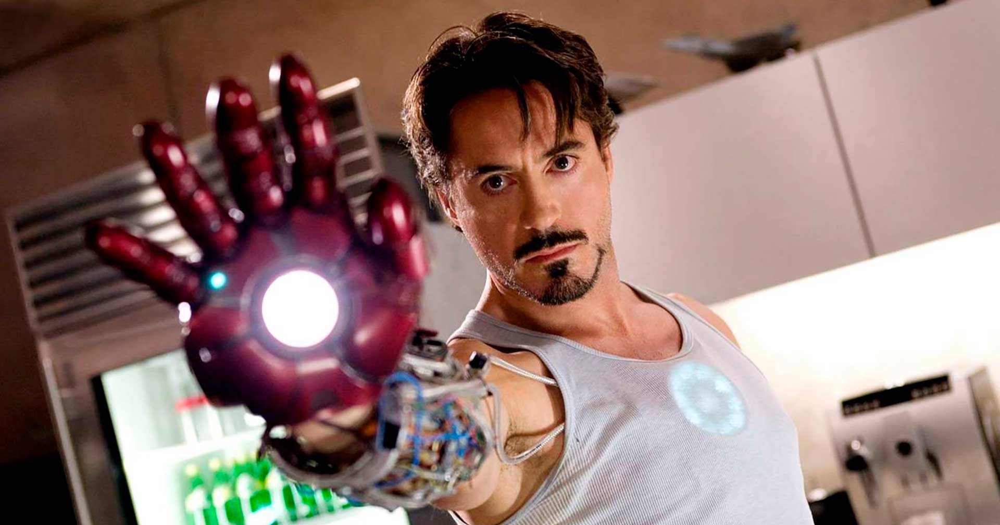
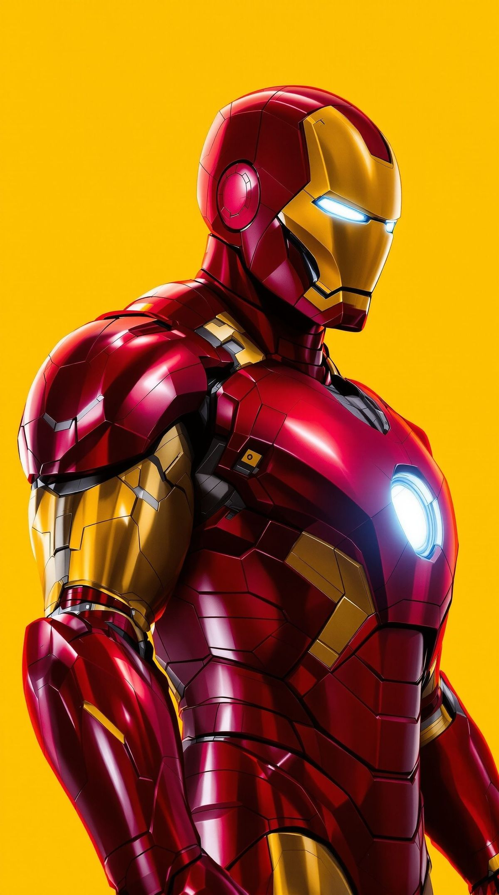
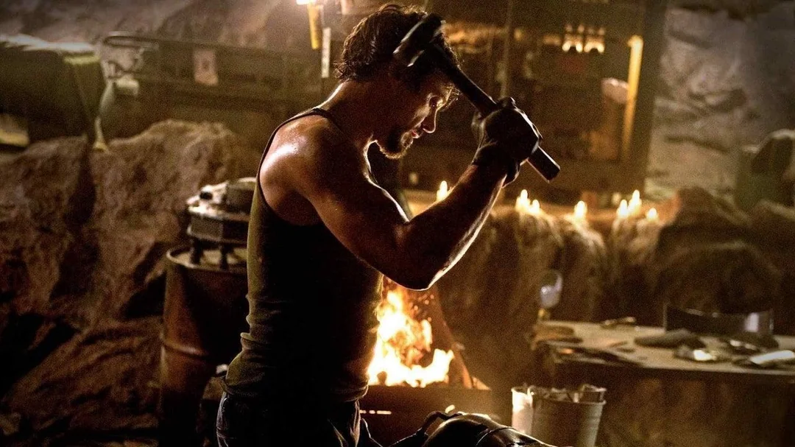
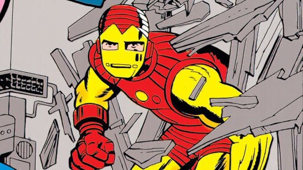
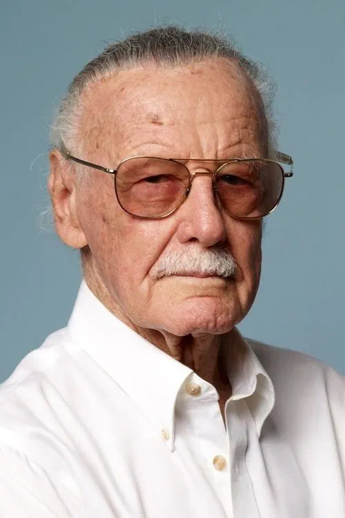
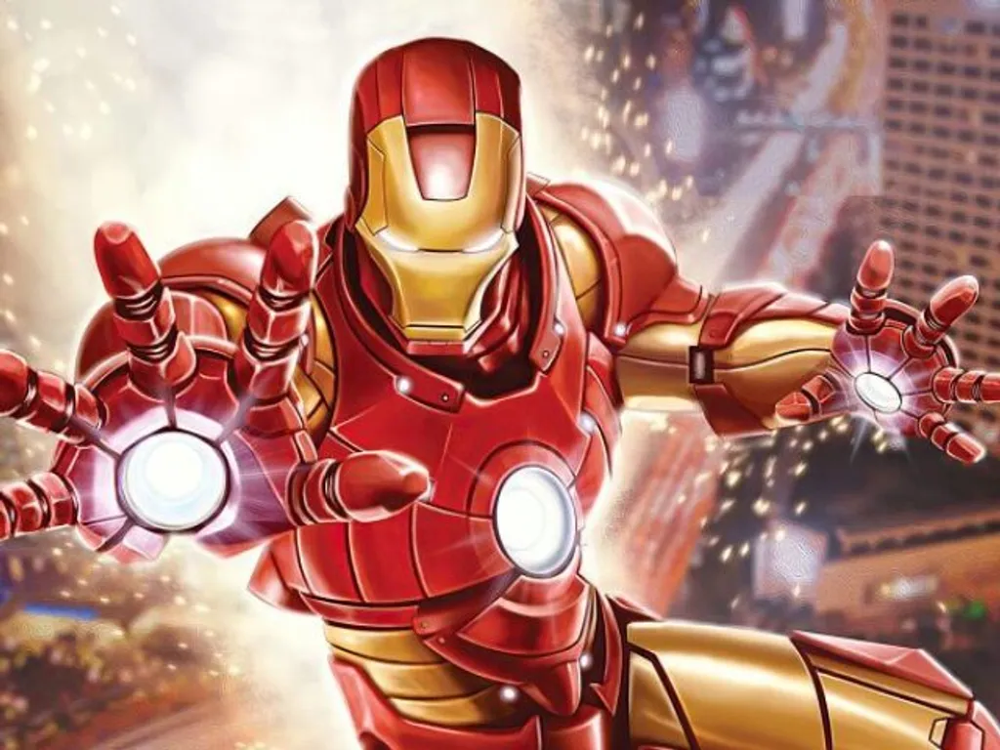

"EU SOU O HOMEM DE FERRO."


Quem é o Homem de Ferro?
Após retornar para casa, Tony decide abandonar a fabricação de armas e dedicar seus conhecimentos ao desenvolvimento de tecnologias que possam ajudar as pessoas. Ele aperfeiçoa sua armadura, criando diferentes versões com recursos avançados, como voo, superforça, sistemas de defesa e inteligência artificial.
Ao longo de sua trajetória, o Homem de Ferro enfrenta diversos inimigos e participa de grandes batalhas ao lado dos Vingadores. Sua personalidade inicialmente arrogante e individualista passa por uma grande transformação, fazendo com que ele aprenda a trabalhar em equipe, reconhecer seus erros e assumir responsabilidades por suas escolhas.
Mais do que um herói equipado com uma armadura, Tony Stark representa a inteligência, a inovação, a coragem e a capacidade de mudança. Sua história mostra que ser um verdadeiro herói não depende apenas de poderes especiais, mas também das decisões, dos sacrifícios e da responsabilidade que alguém está disposto a assumir pelo bem dos outros.
Após retornar para casa, Tony decide abandonar a fabricação de armas e dedicar seus conhecimentos ao desenvolvimento de tecnologias que possam ajudar as pessoas. Ele aperfeiçoa sua armadura, criando diferentes versões com recursos avançados, como voo, superforça, sistemas de defesa e inteligência artificial.
Ao longo de sua trajetória, o Homem de Ferro enfrenta diversos inimigos e participa de grandes batalhas ao lado dos Vingadores. Sua personalidade inicialmente arrogante e individualista passa por uma grande transformação, fazendo com que ele aprenda a trabalhar em equipe, reconhecer seus erros e assumir responsabilidades por suas escolhas.
Mais do que um herói equipado com uma armadura, Tony Stark representa a inteligência, a inovação, a coragem e a capacidade de mudança. Sua história mostra que ser um verdadeiro herói não depende apenas de poderes especiais, mas também das decisões, dos sacrifícios e da responsabilidade que alguém está disposto a assumir pelo bem dos outros.

O ínicio
Capturado no Afeganistão, Tony Stark é obrigado a construir uma arma em uma caverna. Porém, com inteligência e peças improvisadas, cria sua primeira armadura e consegue escapar, dando início ao Homem de Ferro.

Mark III
Tony Stark desenvolve a Mark III, uma armadura mais avançada, resistente e tecnológica. É nela que surge o visual clássico do Homem de Ferro, com as marcantes cores vermelho e dourado, que se tornam seu grande símbolo.
Tony se junta aos Vingadores
Tony Stark se junta aos Vingadores para proteger o mundo de grandes ameaças. Ao lado de outros heróis, usa sua inteligência, tecnologia e armadura para enfrentar inimigos poderosos e salvar a humanidade.

Origem nos Quadrinhos
Tony Stark surgiu nos quadrinhos em 1963, na revista Tales of Suspense #39. Criado pela Marvel, era um inventor e empresário genial que construiu sua primeira armadura para escapar de seus inimigos, dando origem ao Homem de Ferro.
A Riqueza de Tony Stark
Tony Stark herdou uma grande fortuna de sua família e tornou-se um dos homens mais ricos do mundo. Como dono das Indústrias Stark, acumulou riqueza desenvolvendo tecnologias avançadas, armas e equipamentos de alta tecnologia.

Criador do Homem de Ferro
O Homem de Ferro foi criado por Stan Lee, em parceria com os artistas Larry Lieber, Don Heck e Jack Kirby. O personagem apareceu pela primeira vez nos quadrinhos em 1963, na revista Tales of Suspense #39, tornando-se um dos heróis mais importantes da Marvel.

O que você sabe sobre ele?
Teste seus conhecimentos sobre o Homem de Ferro! 🦾 Responda ao nosso quiz, divirta-se e descubra o quanto você sabe sobre Tony Stark, suas armaduras, suas aventuras e o universo Marvel. Será que você é um verdadeiro fã do Vingador de Ferro?